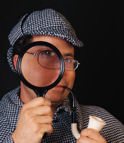
"Я надеюсь, что я не упустил из виду ничего важного?";-- Шерлок ХолмсЕсть несколько отличных сайтов, созданных недовольными пациентами, перенесшими рефракционную хирургию. Если вы рассматриваете LASIK или другой вид рефракционной хирургии, мы рекомендуем вам внимательно изучить эти сайты. У врачей, которые покупают лазеры стоимостью в полмиллиона долларов, очень мало личной мотивации рассказывать всю историю об осложнениях. Прочтите предостережения пациентов, оценивающих ситуацию "20/20 задним числом". Следуйте подсказкам, чтобы лучше понять механизм получения денег в рефракционной хирургии. Загляните за дымовую завесу и шумиху, чтобы узнать правду. Сделайте свою домашнюю работу, прежде чем подвергнуться необратимой операции на вашей единственной паре глаз!
Sclerallens.com :: За последние 25 лет доктор Бошник принял участие в более чем 100 клинических исследованиях контактных линз для крупнейших производителей контактных линз. Кроме того, доктор Бошник читал лекции и выступал с докладами на национальных и международных конференциях. Наш специализированный центр по работе с контактными линзами известен как Глобальный центр реабилитации зрения. Доктор Бошник и его сотрудники посвятили себя восстановлению качественного зрения у пациентов, которые пострадали от потери зрения из-за кератоконуса, операций по пересадке роговицы, рефракционных операций на глазах, таких как LASIK, R-K-операции, хронической сухости глаз, травмы глаз, аутоиммунные заболевания и дистрофии роговицы, такие как синдром Стивенса-Джонсона, и многие другие глазные заболевания.
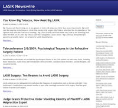
LASIKNewsWire.com :: Новости и информация о LASIK. Пресс-релизы, медицинские исследования, специальные репортажи. Интересные репортажи об индустрии LASIK и медицинских махинациях, связанных с практикой LASIK. Узнайте о роли FDA в сокрытии правды о рисках, связанных с LASIK, от общественности.
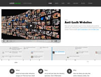
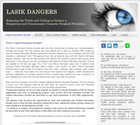
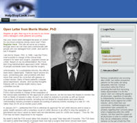
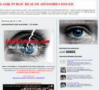
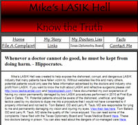
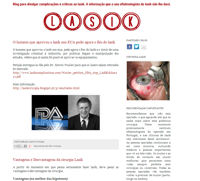
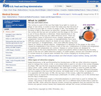
Страница FDA по Lasik :: Несмотря на то, что на сайте много полезной информации, ее недостаточно для адекватного предупреждения потенциальных пациентов. Некоторые разделы читаются почти как реклама LASIK. Страница "Другие ресурсы" содержит ссылки на сайты организаций хирургов LASIK, которые сильно предвзяты. Тем не менее, мы считаем, что будущим пациентам следует ознакомиться с ним, прежде чем решиться на операцию.
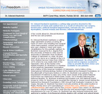
EyeFreedom.com :: Доктор Эдвард Бошник ведет передовую оптометрическую практику, направленную на восстановление зрения и комфорта, утраченных в результате рефракционной хирургии глаза (LASIK, PRK, RK и т.д.), кератоконуса, краевой дегенерации прозрачной оболочки, сильной сухости глаз, дистрофии роговицы, травмы роговицы и синдрома Стивенса-Джонсона.
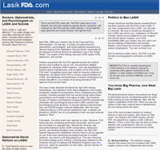
LasikFDA.com :: Разоблачает обман, коррупцию и сговор со стороны FDA и индустрии LASIK. С сайта: "Вы читали о шумихе вокруг 10-минутного чуда. Теперь давайте узнаем правду". В нем рассказывается о событиях, произошедших на слушаниях Комиссии по офтальмологическим устройствам 25 апреля 2008 года, с видеозаписями и расшифровками свидетельских показаний. Показаны параллели между "Big Pharma", "Big Tobacco" и "Big LASIK".
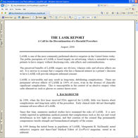
TheLasikReport.com :: Всесторонний обзор медицинской литературы о LASIK. Рассматриваются медицинские исследования, которые раскрывают риски и долгосрочные последствия LASIK. Цитируются 43 рецензируемые журнальные статьи. В отчете делается вывод о том, что LASIK по своей сути является вредной процедурой и от нее следует отказаться.
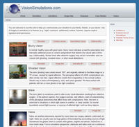
VisionSimulations.com :: На этом сайте, созданном автором и психологом Роджером Д. Дэвисом, доктором философии, представлены фотореалистичные изображения зрительных аберраций, вызванных LASIK и другими рефракционными операциями, включая звездообразование, ореолы, блики, призрачность, нечеткое зрение и сцены ночного вождения. Также содержит множество анимаций и симуляторов, которые позволяют пациентам приблизить свое видение к друзьям, родственникам и врачам и сообщать о нем. Если вам нужна помощь в моделировании вашего видения для других, начните здесь.
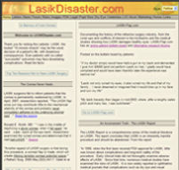
LASIKDisaster.com :: Сайт для пациентов LASIK с самым высоким рейтингом в поисковых системах в Интернете. Разоблачает индустрию LASIK за сокрытие осложнений и вводящую в заблуждение рекламу. Юридические ресурсы для жертв врачебной халатности LASIK. Медицинские исследования осложнений и рисков LASIK. Новостные статьи об осложнениях LASIK. Изображения поврежденных глаз.
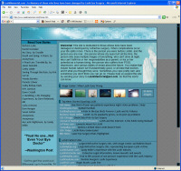
LasikMemorial.com :: Этот сайт, посвященный тем, чья жизнь была искалечена рефракционной хирургией, содержит правдивые истории. написано самими жертвами Когда возникают осложнения, ваша жизнь распадается на две части. Есть человек, которым вы были до операции LASIK, и человек, которым вы являетесь сейчас... Вы понимаете, что, возможно, природа человека не так уж хороша, или, по крайней мере, врачи не такие, какими вы их себе представляли.
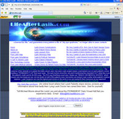
LifeAfterLASIK.com :: Создано активистом, Декан Кантис . Предупреждает о плохих врачах, которые наносят вред пациентам. Предупреждает потенциальных пациентов о маркетинговых аферах LASIK, которые продают поддельные сертификаты и заманивают пациентов на операцию, преуменьшая осложнения. Публикует истории пациентов с плохими результатами. Ссылки на видеоролики YouTube о страшилках LASIK.
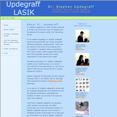
UpdegraffLasik.com :: Создан пациентом LASIK, который пережил неблагоприятный исход, изменивший его жизнь, и теперь считает, что не следует рекламировать LASIK, не раскрывая противопоказаний, рисков и предупреждений. Пациент создал этот веб-сайт в знак протеста против активной рекламы Стивена Апдерграффа, доктора медицины. Сайт предупреждает о возможных осложнениях LASIK и уникальных проблемах, связанных с использованием фемтосекундного лазера LASIK с использованием всего лазера, без использования лезвия и внутрилазерного лазера.
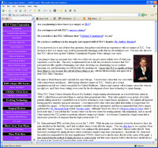
LasikFraud.com :: На этом сайте, созданном пациентским активистом Брентом Хэнсоном, говорится: "Планируете ли вы сделать лазерную операцию на глазу в TLC? Впечатлены ли вы историями успеха TLC? Верите ли вы, что TLC выполнит свои "Пожизненные обязательства" по отношению к вам?... Если вы ответили утвердительно на любой из этих четырех вопросов, то, пожалуйста, ознакомьтесь с моим опытом работы с офтальмохирургией в TLC."
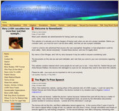
FlawedLasik.com :: Этот сайт, созданный пациентским активистом Домиником Морганом, рассказывает о судебной тяжбе Доминика с его хирургом и Управлением по санитарному надзору за качеством пищевых продуктов и медикаментов. На сайте говорится: "Большинство веб-сайтов Lasik являются рекламой офтальмологической операции Lasik. Этот веб-сайт предназначен для того, чтобы рассказать вам об опасностях проведения Lasik, если вы не являетесь подходящим кандидатом. Прежде чем рассматривать возможность проведения Lasik, вы должны убедиться, что это можно сделать безопасно и что вы являетесь подходящим кандидатом. Я обратилась к врачу, который объявил, что любой человек, страдающий близорукостью, дальнозоркостью или астигматизмом, может быть безопасно прооперирован...это касается почти всех! Я доверилась этим врачам, и теперь я официально слепая. Меня зовут Дом Морган, и я рассказываю свою историю, потому что она может быть полезна всем, кто рассматривает возможность применения Lasik."Другие ссылки, которые нам нравятся
Письмо с просьбой к FDA выдать рекомендации по общественному здравоохранению LASIK: LasikAdvisory.com
Самоубийство с помощью LASIK, связанное с Роберт Селкин, доктор медицинских наук